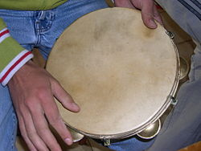

The tambourine is a musical instrument in the percussion family consisting of
a frame, often of wood or plastic, with pairs of small metal jingles, called
"zils". Classically the term tambourine denotes an instrument with a drumhead,
though some variants may not have a head at all. Tambourines are often used with
regular percussion sets. They can be mounted, for example on a stand as part of
a drum kit (and played with drum sticks), or they can be held in the hands and
played by tapping or hitting the instrument.
Tambourines come in many shapes with the most common being circular. It is found
in many forms of music: Turkish folk music, Greek folk music, Italian folk
music, classical music, Persian music, gospel music, pop music and rock music.

Tambourines originated in Egypt, where they were known as the kof to the
Hebrews, in which the instrument was mainly used in religious contexts. The word
tambourine finds its origins in French tambourin, which referred to a long
narrow drum used in Provence, the word being a diminutive of tambour "drum,"
altered by influence of Arabic tunbur "drum". from the Middle Persian word
tambūr "lute, drum".
Playing:
The tambourine can be held in the hand or mounted on a stand, and can be played
in numerous ways, from stroking or shaking the jingles to striking it sharply
with the hand or a stick or using the tambourine to strike the leg or hip.
Tambourine rolls:
There are several ways to achieve a tambourine roll. The easiest method is to
rapidly rotate the hand holding the tambourine back and forth, pivoting at the
wrist.
Thumb roll:
An advanced playing technique is known as the thumb roll. The finger or thumb is
moved over the skin or rim of the tambourine, producing a fast roll from the
jingles on the instrument.
This takes more skill and experience to master. The
thumb or middle finger of the hand not holding the tambourine is run around the
head of the instrument approximately one centimeter from the rim with some
pressure applied. If performed correctly, the thumb should bounce along the head
rapidly, producing the roll.
Usually, the end of the roll is articulated using
the heel of the hand or another finger. In the 2000s, the thumb roll may be
performed with the use of wax or resin applied to the outside of the drum head.
This resin allows the thumb or finger to bounce more rapidly and forcefully
across the head producing an even sound. A continuous roll can be achieved by
moving the thumb in a "figure of 8" pattern around the head.
In rock music, a tambourine is most often played.
By lead singers who shake it while they play Lead singers such as Freddie
Mercury, Mike Love, Jon Anderson, Jim Morrison, Robert Plant, Peter Gabriel,
Liam Gallagher, Gene Clark, Ray Thomas, Trent Reznor, Ian Astbury, Stevie Nicks,
Roger Daltrey, Jon Davison, Tyler Joseph, Gerard Way, and Ryan Tedder have all
been known to use a tambourine while singing.
Tambourines in rock music are most often headless, a ring with jangles but no
drum skin. The Rhythm Tech crescent-shaped tambourine and its derivatives are
popular.
The original Rhythm Tech tambourine is displayed in the Museum of
Modern Art. Jack Ashford's distinctive tambourine playing was a dominant part of
the rhythm section on Motown records. The tambourine was featured in "Green
Tambourine", a busking-oriented song with which The Lemon Pipers, a 1960s
musical group, notched a chart selection.